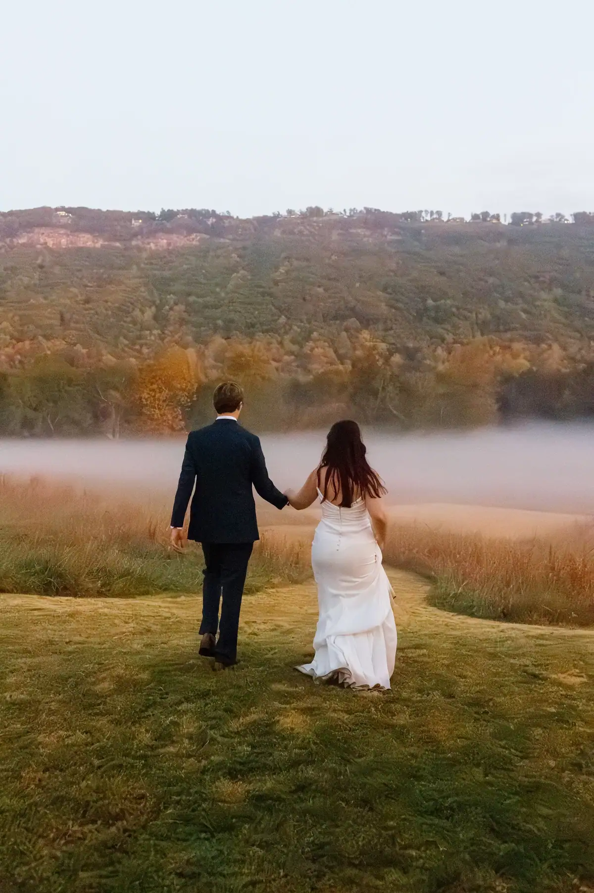
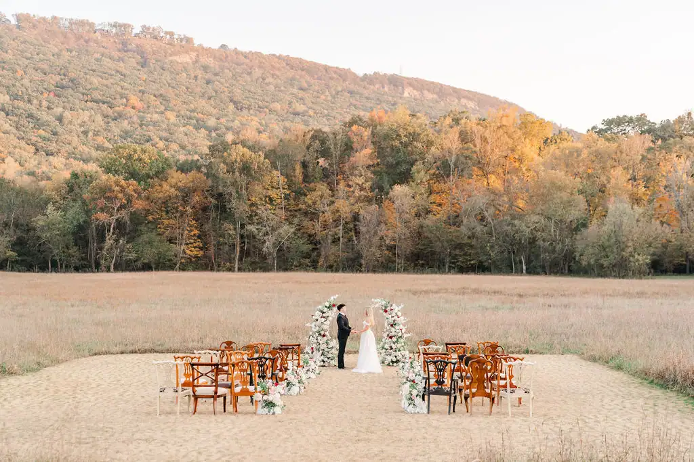
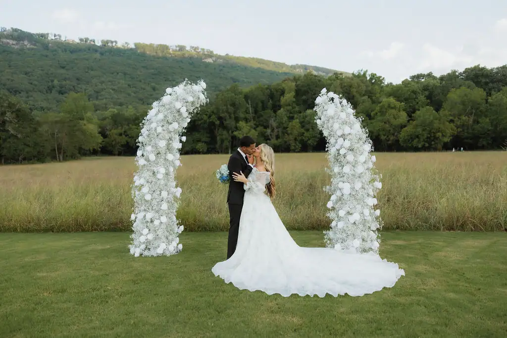
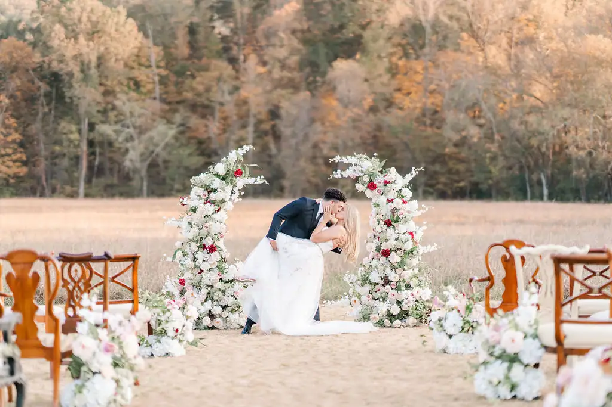

An open meadow beneath the ridge — and, unlike almost anywhere else you could say your vows, nobody has to drive away from it afterwards.
Three hundred people can stand in this meadow. The ridge holds the last of the sun until nearly nine in summer, and when it finally goes, the lamps come on and nobody starts looking for their keys.

Nothing here is fixed — not where you face, not where your family sits, not what stands behind you in the photographs your grandchildren will look at. And if the forecast turns on the Thursday, Davis Hall is four minutes away with the same guest list and none of the panic.


Not at noon. Come at four, stay until the lamps come on, and decide then.
Book a Visit